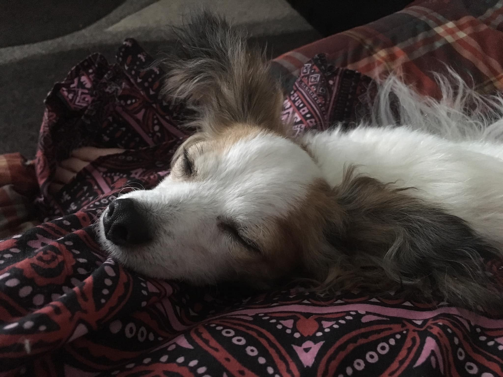

The Pack
- Brownie:
- The oldest of the group and the first ever to start the pack we have today.
- Brownie was adopted from a walmart parking lot when Cyan was only 17 years old.
- It was the first dog, cyan had ever had without her parents assistance.
- Admittedly, Brownie wasn't the prettiest but for $30 bucks Cyan wasn't complaining.
- After some TLC, Brownie eventually put on weight and became Cyan's number 1.
- Butterz:
- He's the middle aged one of the pack, and was made when brownie got a Chihuahua pregnant.
- Butterz was the biggest of the litter and was originally going to be named "Big Booty".
- However, due to conflicting interestes of an ex lover - Cyan came up with Butterz after watching South Park.
- He's quite possibly the most annoying one of the group, but his buttery eyes help him to get away with his
mischevious nature.

- Biscuit:
- He's the second oldest and wasn't always the sweet floofer we all know him to be today.
- We're not sure what life was like for Biscuit prior to being found.
- Cyan acquired him through the Azle Animal shelter that she volunteers at.
- Through some TLC, Biscuit was able to learn how to be a dog.
- And Cyan fell in love with his sweet disposition.
- He's probably the most opionated one of the group, but his sweet little Bambi eyes help him out of the
trouble he causes.
- BoPo Head:
- She's the youngest of the pack but certainly the biggest.
- This sweet Plott Hound was abandoned on Cyan's old highschool teacher's property.
- Originally, Cyan wasn't going to take the puppy. She just wanted to meet her.
- However, the Animal Shelter that Cyan volunteers at, Pets Fur People, refused to take the puppy in due to an
intestinal parasite called Coccidia.
- With the options being animal control or an emergency Foster - the prospects were looking pretty grim for
the puppy.
- Cyan decided to bring the puppy home for fostering.
- Over time, Cyan of course fell for the sweet girl and adopted her.
Cyan recommends,
Village Animal Clinic
for personalized care over your special critters.